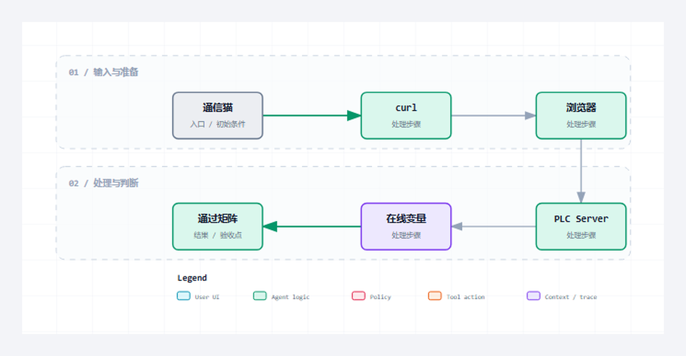

Server 真机通过不能只看一张外部工具截图。至少要把监听、请求、响应、协议错误和连接清理五类证据与 PLC 在线变量对应起来。
适合谁收藏
- 正在实现 PLC 端 HTTP Server 的工程师。
- 正在排查监听、多连接、请求边界或响应发送问题的人。
- 需要建立 Server 真机验收清单的读者。
服务器篇，第 7/7 篇；主系列第 11/28 篇。
现场问题
同一套 Server，用通信猫、curl 和浏览器访问时，Header、连接复用和默认行为并不一样。只用一个工具跑一次，很难覆盖真实边界。
发布级验证需要一张矩阵：外部端发了什么，PLC 收到了什么，状态机走到哪里，返回了什么，计数器为什么变化。
先给结论
Server 通过标准是双向可解释：外部工具得到合法响应，PLC 在线量同时留下监听句柄、槽位、请求路径、响应报文、错误码和计数证据。

读图重点
这张图只压缩本篇的判断路径。读图时先找“通信猫”对应的输入边界，再沿着“工程内部状态”检查状态怎样推进，最后用“解释外部现象对应哪个阶段”确认输出是否已经形成验收证据。
把对象和边界分开
| 对象或阶段 | 工程职责 | 现场观察点 |
|---|---|---|
| 通信猫 | 可控原始请求和分片 | 验证半包、坏 Header 和自定义 Body |
| curl | 可见请求响应细节 | 验证状态码、Header、关闭行为 |
| 浏览器 | 真实客户端默认行为 | 验证 Host、复用和容错边界 |
| 在线变量 | 工程内部状态 | 解释外部现象对应哪个阶段 |
从协议约束到代码职责
协议约束
Server 通过标准是双向可解释：外部工具得到合法响应，PLC 在线量同时留下监听句柄、槽位、请求路径、响应报文、错误码和计数证据。 这条结论先限定消息什么时候成立，再限定哪个角色可以消费结果。若绕过协议边界直接驱动业务，半包、超时、重复执行和连接残留就会进入应用层。
工程抽象
真机测试全局量保留 Server/Client 的目标地址、端口、运行命令和观察结果。文章公开的是变量职责和验收方法，不暴露本机内部路径或过程证据文件名。
稳定性不能用“连续运行没报错”替代。至少要确认接入计数、请求计数、响应计数和错误计数符合实际请求次数，并且断开后的槽位能够回收。
- 通信猫：工程职责是“可控原始请求和分片”。它不能只停留在命名层面，运行时必须能通过“验证半包、坏 Header 和自定义 Body”观察到输入、状态或结果；否则这一层即使有代码，也没有形成可验证边界。
- curl：工程职责是“可见请求响应细节”。它不能只停留在命名层面，运行时必须能通过“验证状态码、Header、关闭行为”观察到输入、状态或结果；否则这一层即使有代码，也没有形成可验证边界。
- 浏览器：工程职责是“真实客户端默认行为”。它不能只停留在命名层面，运行时必须能通过“验证 Host、复用和容错边界”观察到输入、状态或结果；否则这一层即使有代码，也没有形成可验证边界。
- 在线变量：工程职责是“工程内部状态”。它不能只停留在命名层面，运行时必须能通过“解释外部现象对应哪个阶段”观察到输入、状态或结果；否则这一层即使有代码，也没有形成可验证边界。
程序单元
本篇主证据来自 GVL_HttpRealTest.st 中以 VAR_GLOBAL 为定位点的连续源码。这里不是为了展示语法，而是把协议约束落到确定程序单元：输入先进入结构体或缓冲区，状态机只在本周期处理可确认的部分，长度和结束条件决定能否前进，错误码与指标负责把失败原因带出对象边界。这样一来，“真机通过必须同时看外部端和 PLC。”可以在代码、在线变量和外部报文之间逐项对照，而不是依赖经验猜测。
本篇核心源码片段
下面两段代码来自同一个真实文件 GVL_HttpRealTest.st，以 VAR_GLOBAL 为中心连续截取，没有改写变量、删除分支或用伪代码替代。第一段用于确认入口与前置条件，第二段用于确认状态、边界和输出。核对时重点看“可控原始请求和分片”怎样进入对象，以及“解释外部现象对应哪个阶段”怎样证明本次处理已经结束。若两段之间的连续关系无法解释“计数器必须能解释每一次测试。”，就不能把局部代码截图当成实现证据。
片段一：入口、声明与前置条件
VAR_GLOBAL
bResetResults : BOOL := FALSE; // 一次性复位真机联调结果和命令位。
udiNowMs : UDINT := 0; // 示例任务毫秒时钟，按扫描周期累加。
bServerEnable : BOOL := TRUE; // Server 使能，下载后默认监听，便于通信猫直接访问 PLC。
bServerCloseConnection : BOOL := TRUE; // Server 响应后主动关闭连接，匹配通信猫短连接调试习惯。
sServerBindIP : STRING := '0.0.0.0'; // Server 绑定 IP，0.0.0.0 表示任意网卡。
uiServerPort : UINT := GVL_Http.cnDefaultServerPort; // Server 监听端口，默认 18088，匹配通信猫访问 PLC 的 URL。
uiServerResponseStatusCode : UINT := 200; // Server 自定义响应状态码，内置路由默认 200。
sServerResponseBody : STRING(GVL_Http.cnMaxBodySize) := 'hello from PLC Server';// Server 自定义响应 body，非空时未知路径也返回 200。
sServerResponseContentType : STRING(96) := GVL_Http.cnDefaultContentType; // Server 自定义响应 Content-Type。
sServerAdditionalHeader : STRING(GVL_Http.cnMaxHeaderSize) := ''; // Server 自定义响应 Header 行。
bServerListening : BOOL := FALSE; // Server 已获得监听句柄。
bServerRunning : BOOL := FALSE; // Server 正在运行。
bServerBusy : BOOL := FALSE; // Server 正在初始化或等待监听。
bServerError : BOOL := FALSE; // Server 错误锁存。
diServerErrorID : DINT := 0; // Server 错误诊断码。
sServerDiagMsg : STRING(255) := ''; // Server 诊断文本。
eServerState : E_HttpServerState := E_HttpServerState.iDisabled; // Server 状态机。
eServerLastError : E_HttpError := E_HttpError.iNoError; // Server 最近 HTTP 错误。
eServerLastNbsError : NBS.ERROR; // Server 最近 NBS 错误。
uiServerActiveConnections : UINT := 0; // Server 当前活跃连接数。
uiServerLastRequestSlot : UINT := 0; // Server 最近请求槽位。
uiServerLastErrorSlot : UINT := 0; // Server 最近错误槽位。
sServerLastTarget : STRING(GVL_Http.cnMaxTargetLen) := ''; // Server 最近请求路径。
sServerLastBody : STRING(GVL_Http.cnMaxBodySize) := ''; // Server 最近请求 body。
sServerRxMessage : STRING(GVL_Http.cnMaxMessageSize) := ''; // Server 最近一次接收报文。
sServerTxMessage : STRING(GVL_Http.cnMaxMessageSize) := ''; // Server 最近一次发送报文。
udiServerAcceptedCount : UDINT := 0; // Server 累计接入连接数。这一段先回答对象在什么输入和状态下开始工作。阅读时要核对变量的初值、长度上限和启动条件，不能只看某个布尔量是否变成 TRUE。
片段二：状态推进、边界与输出
udiServerRequestCount : UDINT := 0; // Server 累计请求数。
udiServerResponseCount : UDINT := 0; // Server 累计响应数。
udiServerProtocolErrorCount : UDINT := 0; // Server 累计协议错误数。
hServerListenHandle : NBS.CAA.HANDLE; // Server 监听句柄快照。
bServerPassLatched : BOOL := FALSE; // Server 外部 client 联调通过锁存。
bClientEnable : BOOL := TRUE; // Client 使能，下载后可直接向通信猫发起 HTTP 请求。
bClientSend : BOOL := TRUE; // Client 下载后默认发送一次，PLC_PRG 读取后自复位。
bClientAbort : BOOL := FALSE; // Client 中止当前连接命令。
bClientCloseConnection : BOOL := TRUE; // Client 每次响应后主动关闭连接，优先保证通信猫短连接调试稳定。
udiClientTimeoutUs : UDINT := 10000000; // Client 请求超时，单位 [us]，通信猫联调默认 10 s。
sClientURL : STRING(1024) := ''; // Client URL 留空时使用下方 IP/Host/Path 分离引脚。
sClientServerIP : STRING := '192.168.20.2'; // Client 远端 HTTP Server IP。
uiClientPort : UINT := 6971; // Client 远端 HTTP Server 端口，匹配通信猫 HTTP 服务端口。
sClientHost : STRING(GVL_Http.cnMaxHostLen) := '192.168.20.2:6971'; // Client Host 字段，匹配通信猫监听端口。
sClientPath : STRING(GVL_Http.cnMaxTargetLen) := '/api/tongxinmao'; // Client 请求路径，匹配通信猫 URL。
eClientMethod : E_HttpMethod := E_HttpMethod.iPost; // Client 请求方法，默认 POST 便于发送正文。
sClientBody : STRING(GVL_Http.cnMaxBodySize) := 'hello from PLC'; // Client 请求 body，通信猫接收区可直接看到。
sClientContentType : STRING(96) := 'text/plain'; // Client Content-Type，匹配通信猫普通文本联调。
sClientAdditionalHeader : STRING(GVL_Http.cnMaxHeaderSize) := ''; // Client 自定义 Header 行。
bClientTcpConnected : BOOL := FALSE; // Client TCP 连接快照。
bClientBusy : BOOL := FALSE; // Client 正在执行事务。
bClientDone : BOOL := FALSE; // Client 本次事务完成。
bClientError : BOOL := FALSE; // Client 错误锁存。
diClientErrorID : DINT := 0; // Client 错误诊断码。
sClientDiagMsg : STRING(255) := ''; // Client 诊断文本。
eClientState : E_HttpClientState := E_HttpClientState.iDisabled; // Client 状态机。
eClientLastError : E_HttpError := E_HttpError.iNoError; // Client 最近 HTTP 错误。
eClientLastNbsError : NBS.ERROR; // Client 最近 NBS 错误。第二段继续展示同一连续源码范围。把它与第一段合起来，才能判断输入怎样被锁存、状态何时推进、边界何时满足，以及错误出口是否保留了足够诊断信息。
验证路径
| 场景 | 操作 | 通过口径 |
|---|---|---|
| 正常 GET | 访问 /api/ping | 200 和 pong |
| 正常 POST | 访问 /api/echo | Body 原样返回 |
| 协议错误 | 缺 Host、坏长度、坏 chunk | 明确错误响应与计数 |
| 连续事务 | 多轮短连接和顺序长连接 | 无句柄泄漏和跨请求污染 |
场景 1：正常 GET
在通信猫里发送完整的 GET /api/ping HTTP/1.1，并故意把发送动作拆成两段。PLC 侧应先看到接收长度增长，再在报文边界完整后进入路由；curl 收到的必须是带 Content-Length 的 200/pong。如果通信猫只发半包就触发响应，说明接收边界判断错误；如果 curl 成功而 accepted 或 response 计数不闭合，也不能算通过。
场景 2：正常 POST
用 curl 的 --data 发送一段可辨认的文本，抓取请求和响应的 Header 与 Body。验收点不是只有返回 200，而是响应 Body 与输入逐字相同、Content-Length 与实际字节数相等，同时在线变量里的请求长度和响应长度可解释。若 echo 结果正确但长度计数未归零或下一轮仍带着旧 Body，问题在事务收口而不在路由。
场景 3：协议错误
分别构造缺失 Host、伪造长度和不完整 chunk 的原始请求。预期是 Server 给出可区分的协议错误或主动关闭连接，而不是卡在 Busy、也不是把坏数据交给业务回调。每次失败后核对 error 计数只增加一次、槽位释放、下一笔正常 ping 仍能完成；这样才能证明错误路径没有污染后续连接。
场景 4：连续事务
先连续建立多次短连接，再在同一连接上顺序执行两笔请求，期间记录 accepted、closed、activeSlots 与请求序号。通过条件是每笔响应只对应本次路径，短连接结束后槽位归零，长连接的第二笔不会复用第一笔 Body 或状态码。若运行几轮后 activeSlots 单调上升，必须先定位回收条件，不能把它解释成客户端偶发。
常见误判
- 只用一种工具发一次正常 GET，就把 Server 标记为真机验收通过。
- 外部工具得到响应，却不核对 accepted、request、response 和 error 计数。
- 测试结束不确认槽位回收，连续运行后才暴露连接资源泄漏。
这些误判的共同点，是拿一个局部现象替代完整事务。定位时必须回到本篇的输入、状态、边界和输出四个坐标，并用相同输入完成回归。
这一篇你最该记住
- 真机通过必须同时看外部端和 PLC。
- 不同工具是互补证据，不是互相替代。
- 计数器必须能解释每一次测试。
系列导航
- 系列：CodeSys HTTP 系列教程，第 11/28 篇。
- 阶段：服务器篇，职责线位置 7/7。
- 上一篇：第10篇
- 下一篇：第12篇
- 发布顺序：基础认知 -> Server -> Client -> 完整源码加更 -> 综合收束。
评论区预留
这里先保留评论和回复结构，不接入第三方服务。后续统一决定登录、匿名、审核、反垃圾和静态站兼容策略。